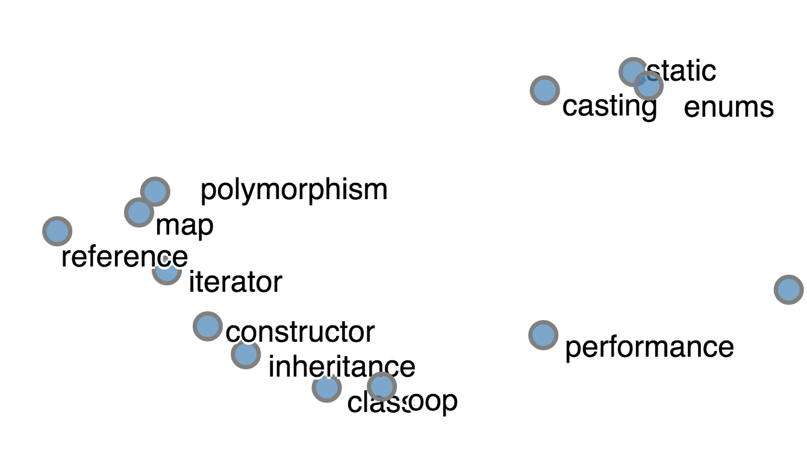
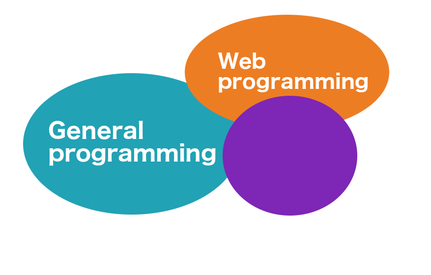
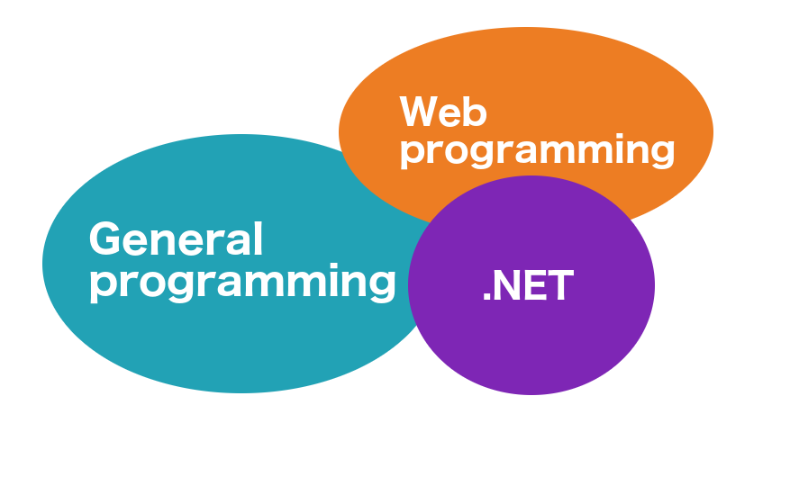

val box : value:'T -> obj
Full name: Microsoft.FSharp.Core.Operators.box
|
|
Evelina Gabasova
@evelgab
evelinag.com
github.com/evelinag
|
Exploring

Evelina Gabasova
@evelgab
Exploring

Evelina Gabasova
@evelgab
?
Tags
- What are the most common tags?
Tags
- What are the most common tags?
- When do people ask questions?
Question: When?


Who's your target user?
Question: Where?
Where?
- 5 277 833 users in total
- 769 541 filled in their location
7151 Mawson Station, Australian Antarctic Territory, Antarctica
\[n \times \frac{1}{\text{population}} \times \frac{\text{registered}}{\text{located}} \times 1,000,000\]
ppm (Programmers-per-million)
(Sampling bias)
Tags + Users
=
Communities
Evelina |
1 |
0 |
1 |
1 |
0 |
Krzysztof |
1 |
1 |
1 |
0 |
0 |
44 265 tags x 5 277 831 users
Users with more than 1,000 posts
Tags with more than 5,000 posts
807 tags, 1633 power users
t-SNE
t-distributed Stochastic Neighbourhood embedding
t-SNE in R
1:
2:
3:
4:
5:
|
library(tsne)
ts <- tsne(m, perplexity=20)
plot(ts)
|
t-SNE in F#
1:
2:
3:
4:
5:
6:
|
open RProvider
open RProvider.tsne(tsne)
let ts = R.tsne(namedParams[ "X", box m; "perplexity", box 20])
R.plot(ts)
|
The best thing about R is that it was written by statisticians. The worst thing about R is that it was written by statisticians.
Bow Cowgill, 2009

Quantifying Communities
No overlap
iOS - R
Django - middleware
Most Central
Based on number of connections
- arrays
- string
- performance
Communities
Clustering of nodes in a network

(depending on algorithm used)

(depending on algorithm used)

(depending on algorithm used)
✔ Tags
✔ Users
✔ Technologies
Questions and Answers
Is
a meritocracy?
Machine learning
Unsupervised
- Clustering
- Anomaly detection
- ...
Data exploration
|
Supervised
- Classification
- Regression
- ...
Prediction
|
Regression
input data
⬇
score
Input data
18,100,293 rows
"Accepted"
"Question Score"
"Number of tags"
"Answer Count"
"Comment Count"
"Question Favorite Count"
"Question View Count"
"Author Reputation"
"Author Profile Views"
"Author Up Votes"
"Author Down Votes"
"Gold Badges"
"Silver Badges"
"Bronze Badges"
"Author Number of Tags"
"Time to Answer"
⬇
"Score"
Linear and non-linear Regression

Power-law distributions

Most predictive

Quality of answer matters!
... unless you are Jon Skeet
Technological side of things
Tool for the job
Data science side of things
Questions
- Hobby projects vs. enterprise
- Communities
- Help others
- Move to the Dominican republic
|
Evelina Gabasova
@evelgab
evelinag.com
|